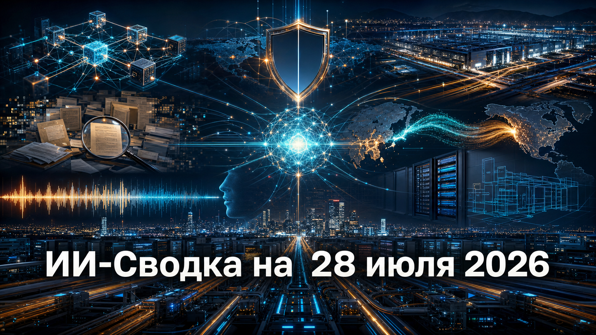

Повестка дня показывает, что ИИ-рынок одновременно открывает модели, строит инфраструктуру рекордного масштаба и пытается закрыть новые риски безопасности. На уровне практического внедрения главным дефицитом становятся не интерес к ИИ, а готовность данных, вычислений, политик доступа и навыков пользователей.
Отдельно заметна конкуренция за доступные модели: китайские разработчики расширяют присутствие за пределами домашнего рынка, а компании и пользователи вынуждены внимательнее относиться к тому, где оказываются их данные и опубликованные материалы.
Nvidia объявила о создании Open Secure AI Alliance вместе с Microsoft, Hugging Face, Linux Foundation, CrowdStrike, IBM, Red Hat, Cloudflare, Cisco, SAP и другими участниками. Как сообщает NVIDIA, альянс намерен развивать открытые модели, инструменты и практики для защиты программного обеспечения и агентов ИИ.
Инициатива опирается на работы Linux Foundation Akrites и сообщества OpenSSF. Это пока объединение основателей, а не выпуск готового набора продуктов: механизмы управления, финансирование и календарь релизов подробно не раскрыты. Однако сам альянс означает переход дискуссии об открытых моделях от политических деклараций к совместимым средствам защиты агентных систем и цепочек поставки ПО.
Moonshot AI выполнила обещание, данное при первоначальном запуске Kimi K3: 27 июля компания открыла веса модели и опубликовала технический отчёт. В материалах Kimi-K3 модель описана как MoE-система с поддержкой агентского применения, длинного контекста и визуального понимания.
Это существенное изменение по сравнению с доступом только через сервисы разработчика: теперь Kimi K3 можно самостоятельно развёртывать и исследовать. Ранее заявленные 2,8 трлн общих параметров и контекст до 1 млн токенов остаются характеристиками разработчика, а независимые оценки качества и требований к инфраструктуре ещё предстоит воспроизвести. Для команд разработки это расширяет выбор моделей для локального размещения и экспериментов с ИИ-кодингом.
По данным Bloomberg Law, Nvidia обсуждает гарантию объёмом до 250 млрд долларов для финансирования и аренды дата-центрового проекта OpenAI в южном Огайо. Публикация связывает переговоры с потенциальной инфраструктурой мощностью до 10 ГВт и участием SoftBank.
Ни Nvidia, ни OpenAI публично сделку не подтвердили, поэтому речь идёт о переговорах, а не о заключённом соглашении. Сумма, структура гарантии и сроки могут измениться. Но сам масштаб возможной схемы показывает, что конкурентоспособность frontier-моделей всё сильнее зависит от долгосрочного финансирования энергии, площадок и вычислительных кластеров, а не только от поставок ускорителей.
WIRED обнаружил в Google и Bing страницы с доступными по ссылке чатами Claude и материалами Artifacts. В проверенной изданием выборке на части таких страниц отсутствовала директива noindex; детали описаны в публикации Private Claude Chats Exposed in Google and Bing Search Results.
Это не подтверждённый взлом Anthropic: речь идёт о материалах, доступных через публичные ссылки. Google указала, что контроль индексации публичных страниц относится к владельцу сайта, а Anthropic заявила, что не передаёт поисковикам каталоги чатов и sitemap-файлы. Инцидент напоминает компаниям и авторам ИИ-контента: функция «поделиться по ссылке» должна рассматриваться как потенциальная веб-публикация, особенно если в диалогах или созданных артефактах есть рабочие данные.
Associated Press собрала примеры использования DeepSeek, Qwen, Kimi и GLM американскими разработчиками и компаниями. В обзоре Cheaper, open and intelligent: Chinese AI models gain ground, as they make inroads in the US среди причин интереса названы более низкая стоимость, доступность весов и возможность самостоятельно развернуть модель.
Материал не является статистическим измерением доли рынка и не доказывает массовую миграцию американских предприятий на китайские решения: он опирается на отдельные примеры и интервью. Тем не менее тренд важен для рынка: конкуренция смещается от закрытых сравнений бенчмарков к практическим критериям — цене инференса, контролю над развертыванием и скорости интеграции модели в продукт.
К2 НейроТех опросила 100 компаний корпоративного сегмента о внедрении генеративного ИИ. По данным CNews, 65% респондентов видят разрыв между ожиданиями руководства и реальными возможностями внедрения, а 52% считают, что инфраструктуру необходимо серьёзно модернизировать либо ещё не оценивали её под ИИ-нагрузки.
Также 56% участников назвали свои ландшафты данных частично готовыми или неготовыми к новым регуляторным требованиям, а о реальном контроле и политиках безопасности ИИ-сервисов сообщили 29%. Выборка ограничена, методология подробно не раскрыта, а исследование проведено поставщиком инфраструктурных решений. Но для бизнеса вывод практичен: перед масштабированием ИИ нужно планировать данные, доступы, нагрузку и MLSecOps, иначе пилоты не превратятся в устойчивые процессы.
В исследовании Kokoc Group участникам предложили отличить созданные человеком и синтетические тексты, изображения, аудио и видео. Как сообщает CNews, наиболее трудным форматом стали голосовые сообщения: правильный ответ дали 44% участников. Для видео доля верных ответов составила 77%, для текстов — 74%, для реалистичных пейзажных фотографий — 61%.
Публикация не раскрывает размер выборки, способ набора участников и статистическую погрешность, поэтому результаты нельзя считать репрезентативным замером всей страны. Однако они указывают на уязвимость голосовых каналов: банкам, службам поддержки и маркетинговым командам потребуется яснее обозначать автоматизированное взаимодействие, а пользователям — проверять источник аудиосообщений, особенно в чувствительных финансовых и сервисных сценариях.